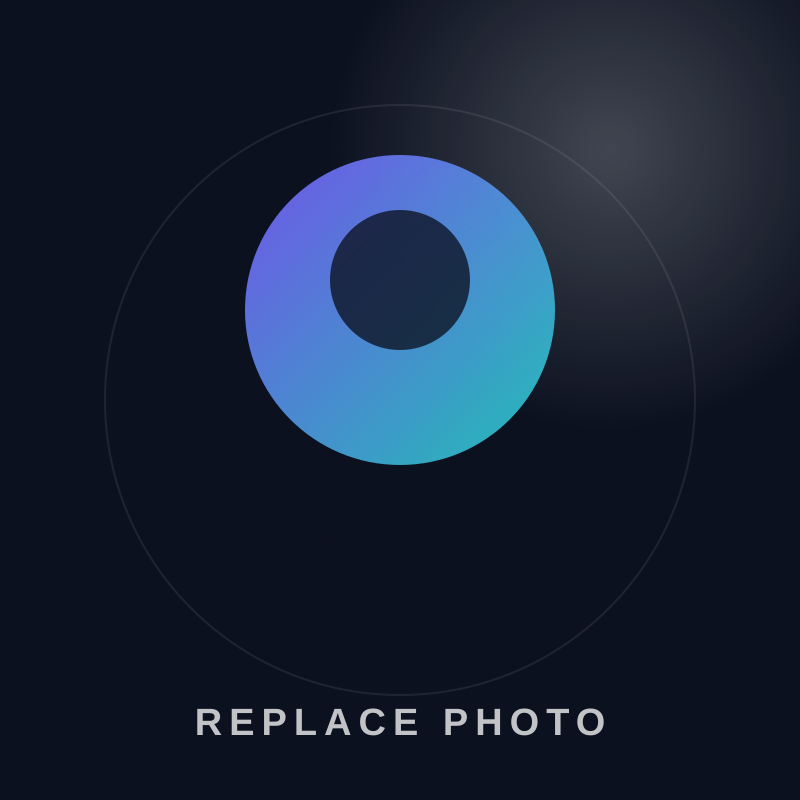

سلام، من ابوالفضل یزدی هستم.
دانشجوی مهندسی کامپیوتر و علاقهمند به فناوری
با تجربه عملی در سختافزار، تعمیرات و خدمات فنی کامپیوتر و لپتاپ؛ در مسیر توسعه مهارتهای برنامهنویسی و فناوریهای نوین.

ABOLFAZL
YAZDI.Computer Engineering · Technology
YAZDI.Computer Engineering · Technology
1398شروع تجربه کاری
1403شروع مهندسی کامپیوتر
3+حوزه فنی و فناوری
12مهارت کلیدی
01
ABOUT ME
درباره من
دانشجوی مهندسی کامپیوتر و علاقهمند به حوزه فناوری، با تجربه عملی در زمینه سختافزار، تعمیرات و خدمات فنی کامپیوتر و لپتاپ. علاقهمند به توسعه مهارت در حوزه برنامهنویسی و فناوریهای نوین، با هدف فعالیت حرفهای در حوزه مهندسی کامپیوتر و برنامهنویسی.
02
EXPERIENCE
تجربه حرفهای
03
EDUCATION
تحصیلات
04
PROJECTS
پروژهها و فعالیتها
این بخش برای پروژههای آینده آماده است؛ هر زمان پروژهای اضافه کنی، فقط اطلاعات آن را در فایل داده ویرایش کن.
05
SKILLS
مهارتهای حرفهای
06
LANGUAGES
زبانها
07
CONTACT
بیایید در ارتباط باشیم
برای ارتباط، همکاری، فرصتهای کاری یا آشنایی بیشتر خوشحال میشوم با من در تماس باشید.
LET'S
CONNECTAY.
CONNECTAY.